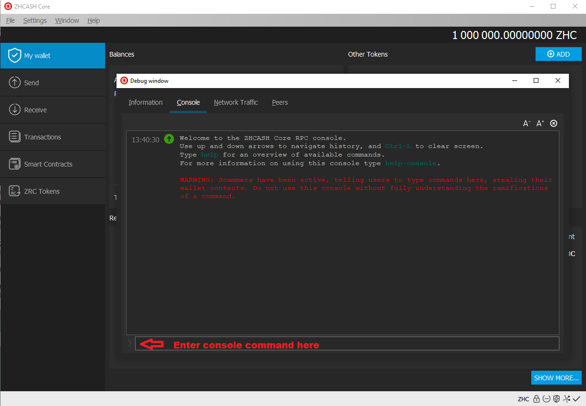
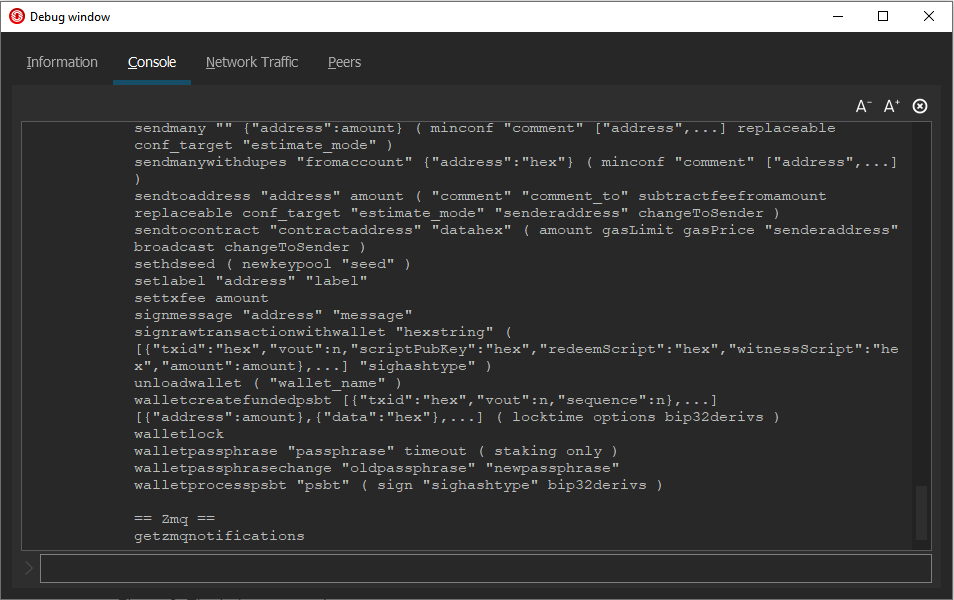
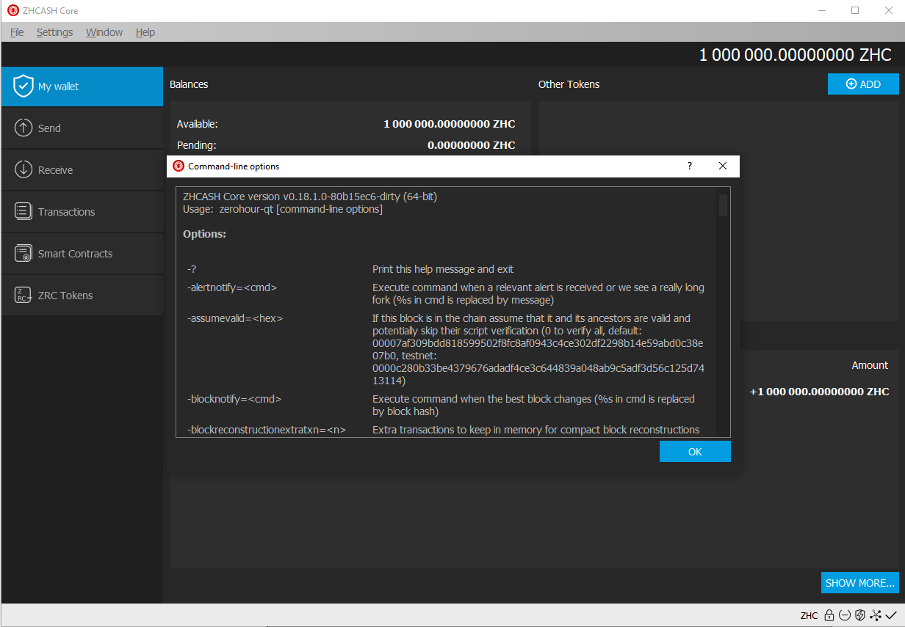
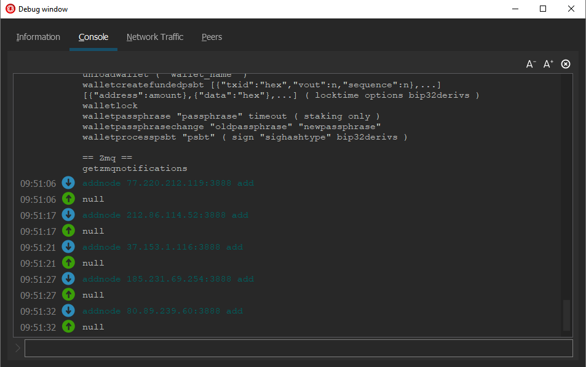
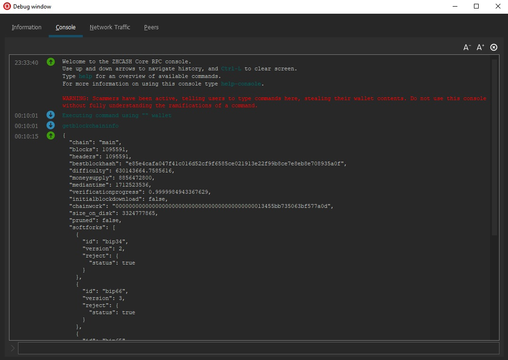

Archived documentation (backup: 4 September 2026). Commands and wallet interfaces may differ in current releases.
Commands
The ZHCash Core wallet has a rich set of commands which give comprehensive control of the wallet and blockchain transactions. There are two sets of commands that may be used with ZHCash Core wallets:
- Console commands are given to a wallet that is already running.
- Startup commands are used when starting up a wallet.
This manual focuses on the console commands which are given to a wallet that is running and can be sent using RPC (Remote Procedure Calls) or on the command line to the ZeroHourD server wallet or given to the ZeroHour-QT desktop GUI (Graphical User Interface) wallet using the Debug window Console command line (see Figure 1).

Figure 1. The ZeroHour-QT ConsoleNote the warning message in red in Figure 1 and be careful using the private key commands (dumpprivkey and dumpwallet) with Mainnet wallets.
For the server wallet ZeroHourD, console commands are given using the Command Line Interface application ZeroHour-cli on the system command line prompt.
You can always get a list of the current console commands using the help command (see Figure 3.)

Figure 3. The help commandConsole Commands :hammer_and_wrench:
Console commands are given to a running ZHCash Core wallet and provide additional information and control. Console commands and are required to operate the ZeroHourD server wallet, which is a "headless" wallet with no graphical user interface.
There are 136 console commands with some good references for the 112 inherited from bitcoin. There are 13 "hidden" commands that are used by developers and won't show up in the "help" list.
Commands can have required or optional parameters and more numerous parameters are entered in JSON (JavaScript Object Notation) format with escaped double quotes ( \" ) as shown below.
Common parameters for these commands are ZHCash addresses, block hashes, contract addresses, etc. Some of the commands will have an optional parameter "minconf" (minimum confirmations) which allows you to get a response for a transaction or block that has at least that number of confirmations.
The chain query bitcoin API reference https://chainquery.com explains the parameters and gives examples with responses for the commands inherited from bitcoin. The bitcoin chain query API reverence gives 67 commands, of which 2 are not in ZHCash (estimatepriority, getgenerate) and two (gettransaction, walletpassphrase) have an additional parameter for ZHCash. See also https://bitcoin.org/en/developer-reference#remote-procedure-calls-rpcs.
Advanced interfaces to the ZHCash Core wallet (full node) can use these "console commands" as RPCs (Remote Procedure Calls) over a dedicated port connection to the node. To build an exchange hot wallet or server node for a mobile DAPP (Distributed Application) you can use RPCs, which follow these same console commands. The client node offers a JSON-RPC interface over HTTP sockets to perform various operational functions and to manage the local node.
A quick comment on "accounts". Accounts was an ill-fated way from bitcoin to track balances for what are really UTXO transaction-based values, and "accounts" are deprecated and will be phased out by version 0.18.
Here are some command groupings that are useful for various tasks:
- Peer connections:
getconnectioncount,getpeerinfo,addnodes,getnetworkinfo - Staking:
getstakinginfo,getwalletinfo,getnetworkinfo - Sending:
listaddressgroupings,sendtoaddress,sendmany,sendmanywithdupes - Raw transactions:
crearterawtransaction,signrawtransaction,combinerawtransactoins,sendrawtransaction - Smart contract transactions:
createcontract,callcontract,sendtocontract,getaccountinfo,getstorage,searchlogs,waitforlogs
Startup Commands
Startup commands give additional control and recovery options when launching the wallet. For example, you can use startup commands for various kinds of blockchain recovery techniques, additional debug logging or additional controls. If you are going to use these startup commands, make sure you have a good backup of the wallet.dat file.
See the startup commands on the ZeroHour-QT wallet with Help - Command line options:

Figure 4. Startup commandsand on the command line itself with "ZeroHourD -?":
Console Commands A - Z
For these console commands documented below, responses are given for default parameters (ZHCash version 0.16 - winter 2018/2019). Commands marked DEPRECATED should not be used because they will be removed and replaced in future versions of the wallet, for example, commands using "account" will be removed in version 0.18.
Using the command "help \
abandontransaction "txid"
Works on transactions not in the blockchain or mempool, used in testing.
abandontransaction "0cc99a30bc2064041ea4263835b4ed594ff500c56d6b14e4970aeee548e71389"
Transaction not eligible for abandonment (code -5)
abortrescan
Stops a wallet rescan triggered by a command such as importprivkey. This command can be issued by opening a 2nd command line window (where the first window is scanning), in which case the command will stop the scan and return "true".
ZeroHour-cli abortrescan
true
addmultisigaddress nrequired ["key",...] ( "account" "address_type" )
Add a multisignature address to the wallet so you can receive and send from that address. Run the command on each machine that will be signing and backup the wallet.dat file. The address can be a ZHCash address or hex-encoded public key. Use importaddress to add the multisig address on each signing wallet.
This functionality is only intended for use with non-watchonly addresses. See importaddress for watchonly p2sh address support. Use of account is DEPRECATED). See also validateaddress.
addmultisigaddress 2 "[\"ZF4687xfsM314t1xfaAzaFtfbSRidnDn96\",\"ZGMhoSS1YQC3Ve8gCKLaKwt6otvhFhEoWg\"]"
{
"address": "ZF4687xfsM314t1xfaAzaFtfbSRidnDn96",
"redeemScript": "7721538ef45ab52bd53508adfda3cfe82ebcaf0495963729e5ff2a8e5aeecdd4cdd23daea03cf4394ad4c578caff2d297ce937c3afba5bc56f31c786b2addf56c72ab"
}
addnode "node" "add|remove|onetry"
Attempts to add a node with a known IP address. This command is useful for new wallets that are having trouble making peer connections. Here are some good IP addresses to add, you can put these commands in one after another, then the wallet will try for a few minutes to make a peer connection with each. ZeroHourD returns nothing:
addnode 77.220.212.119:38100 add
addnode 212.86.114.52:38100 add
addnode 37.153.1.116:38100 add
addnode 185.231.69.254:38100 add
addnode 80.89.239.60:38100 add
ZeroHour-QT returns "null" after each (see Figure 6).

Figure 6. Entering the addnode commandaddwitnessaddress "address" ( p2sh )
Hidden command. DEPRECATED. This command was a way to generate a SegWit address from an existing legacy address, usually a P2SH-P2WPKH addresses - Pay-to-Witness-Public-Key-Hash (P2WPKH) script embedded in a Pay-to-Script-Hash (P2SH) address. This command is mostly disabled in version 0.16 and will be removed in version 0.17. Instead, use the getnewaddress command with address type "p2sh-segwit" or "bech32".
Launch v 0.16 ZeroHourD with -deprecatedrpc=addwitnessaddress to run the command:
addwitnessaddress ZF4687xfsM314t1xfaAzaFtfbSRidnDn96
ZGMhoSS1YQC3Ve8gCKLaKwt6otvhFhEoWg
backupwallet "destination"
The destination can be a filename or path with a filename. The wallet must be fully decrypted (not just for staking only) for this command to work. ZeroHour-QT will returns "null", ZeroHourD returns nothing. On Windows:
backupwallet "C:\Users\<username>\Desktop\Backups\backup2018-10-21.dat"
null
bumpfee "txid" ( options )
Bumps the fee of a transaction, replacing it with a new transaction by adjusting the change. The new fee can be calculated automatically or by using various options.
bumpfee "cae25062777fca1bce7f860dd238af2be4495f4aef1b5a15bbee260b4c3cde2"
{
"txid": "ecbc798c140b5104ae3d5828493e8e5ef04131dd0e44eb7fa7e1abba24901a5",
"origfee": 0.00090400,
"fee": 0.00093061,
"errors": [
]
}
callcontract "address" "data" ( address )
Arguments:
- "address" (string, required) The account address
- "data" (string, required) The data hex string
- address (string, optional) The sender address hex string
- gasLimit (string, optional) The gas limit for executing the contract
TO COME
clearbanned
Clear all banned nodes IPs. ZeroHour-QT returns "null", ZeroHourD gives no response.
clearbanned
null
combinerawtransaction ["hexstring",...]
Combine multiple partially signed raw transactions into one transaction. The combined transaction may be another partially signed transaction or a fully signed transaction. Here two raw transactions are combined:
combinerawtransaction "[\"0200000001b<snip>000000\", \"0200000001c<snip>000000\"]"
0200000001b<snip>000000
createcontract "bytecode" (gaslimit gasprice "senderaddress" broadcast)
Publish a smart contract for the given bytecode, using default gas price of 0.00000040 and gas amount of 2,500,000. Returns the transaction ID and the contract address hash.
createcontract 60606040<snip>41701d0029
{
"txid": "a1d823cb5ce776200dcbe729d901d4e1d31ad5bb8d835db0f704g73ac8e74d3",
"sender": "ZF4687xfsM314t1xfaAzaFtfbSRidnDn96",
"hash160": "efe574bu5ce54a7eb33f96e4336accbed826ffe",
"address": "4853cd349027fe239fed85837456b3c48aae42a"
}
createmultisig nrequired ["key",...]
DEPRECATED. Use addmultisigaddress.
createrawtransaction [{"txid":"id","vout":n},...] {"address":amount,"data":"hex",...} ( locktime ) ( replaceable )
Create a hex-encoded raw transaction sending some inputs to outputs. The transaction must then be signed and sent to the network, see signrawtransaction and sendrawtransaction. Returns a hex-encoded raw transaction. If you are sending coins make sure to create a change address so the change can be returned; any difference between the input values and output values will be taken as the transaction fee. If you don't work out the math you could pay a big transaction fee.
createrawtransaction "[{\"txid\":\"17b3f9ef530695ef2e0368e445a3b59bf12811bdfd42325bb14248e72deb7e2\",\"vout\":0}]" "{\"Qd5eHho389mJMCxSzAbe31w2vntTc7192\":1.0, \"QdXtq55Bf443Lkme2hdj4mD8KKepk32f6\":0.99}"
020000001d637cf207c6418fb6220cfcb2b141ba5d230f0ba0a43c68b358aff9a8a6000000000fffffff0509e5f50480000001983a952d5fb15a70832ffdc3cadd3dc7749a49bf053ed6defacd09ef6060000000187aa814bd4ae4167bebbf56bb7c51c5eabf35d50a5c6e7f33ad0000000
decoderawtransaction "hexstring" ( iswitness )
Gives the decoded data from a raw hex-encoded transaction. Here we decode the results from createrawtransaction above.
decoderawtransaction 0200000<snip>f33ad0000000
{
"txid": "c93dace459f5ac38c9d28ded224e47364abdde5e3fa947dc2d9c4422afb8852",
"hash": "c93dace459f5ac38c9d28ded224e47364abdde5e3fa947dc2d9c4422afb8852",
"version": 2,
"size": 119,
"vsize": 119,
"locktime": 0,
"vin": [
{
"txid": "17b3f9ef530695ef2e0368e445a3b59bf12811bdfd42325bb14248e72deb7e2",
"vout": 0,
"scriptSig": {
"asm": "",
"hex": ""
},
"sequence": 4384362583
}
],
"vout": [
{
"value": 1.00000000,
<snip>
}
]
}
decodescript "hexstring"
Decode a hex-encoded script, for example, decode the script for a mulitsig address:
decodescript 52460396bc49812bad50949fbc0bbd44e95bf32a5695519b3ff267a5d93cba3bd169b2393cd4864da4c2786dd3322fcfcb239c3db185ef33fa14836b8fecf36c68bb84ddac92f2
{
"asm": "2 0396c2483bbc207827fbc06fb32f48bf28450b5fb973032b742aeedd98dadcf3ba 02ba529ef3455bcc4339dbd7269acc2de135ff65a33c706a9beef48c37ab2a95ab 2 OP_CHECKMULTISIG",
"reqSigs": 2,
"type": "multisig",
"addresses": [
"Qgw5Ds4Py6J2oBX3EKP3kyde2UpnWn7eV",
"QK3bx79fzkei5XF7h2q7wB4s6MK99u29x"
],
"p2sh": "mKa7c52cX97eK4vdk35jV442p3j59hk3R"
}
disconnectnode "[address]" [nodeid]
Disconnects a peer (node) using either the IP address or node number. ZeroHour-QT will return "null", ZeroHourD will return nothing.
disconnectnode "35.198.0.76:38100"
null
dumpprivkey "address"
Displays the private key for a given address in WIF (Wallet Import Format). The wallet must be unlocked (and not for "staking only") for this command to work.
dumpprivkey "QXfSbN8DaT21Z6L3Pw52UexuP8zW4mY6h"
L3vaEHms4VpciP85UsufQf3Gfa9p5gatBGm6Z4rD8FxzFLdXE5V
dumpwallet "filename"
Writes all the wallet private keys to a file in clear text (unencrypted) format. The wallet must be fully decrypted (not just for staking only) for this command to work. Returns the filename. Dumpwallet will save all the private keys and their addresses; it will not save watchonly addresses (which do not have private keys in the wallet). This file contains all the private keys in the wallet (1,000 or more), be very careful and do not store the dump file online.
On PC:
dumpwallet "C:\Users\<username>\Desktop\Backups\dump 2018-10-30.txt"
{
"filename": "C:\\Users\\<username>\\Desktop\\Backups\\dump 2018-10-30.txt"
}
File:
Wallet dump created by ZHCash v0.16.1.0-0806c12c4-dirty
* Created on 2018-10-31T01:56:32Z
* Best block at time of backup was 241161 (b11d5169d66d39cbcd848e2ea3f9adfcee1c22af945f100aec9e762d88609e2e),
mined on 2018-10-31T01:55:28Z
extended private masterkey: <snip>
On Mac:
dumpwallet /Users/<USERNAME>/Desktop/dump_2018-12-15.txt
{
"filename": "/Users/<USERNAME>/Desktop/dump_2018-12-15.txt"
}
File:
Wallet dump created by ZHCash v0.16.2.0-47a30461d-dirty
* Created on 2018-12-16T02:22:59Z
* Best block at time of backup was 148510
(ca8a9457a69882b395bf56671e3661e148d3aca4a7b6c77398804229e7fb58f4),
mined on 2018-05-06T02:45:52Z
extended private masterkey: <snip>
encryptwallet "passphrase"
Encrypts the wallet with "passphrase" for first-time encryption. After encryption, any calls that interact with private keys such as sending or signing will require passphrase entry to enable these functions. See also walletpassphrase, walletlock and walletpassphrasechange. After this command runs, the wallet will shut down.
encryptwallet "you should always use a long and strong passphrase"
(wallet exits)
echo "message"
Hidden command. Simply echo back the input arguments. This command is for testing.
The difference between echo and echojson is that echojson has argument conversion enabled in the client-side table in ZeroHour-cli and the GUI. There is no server-side difference. Here we echo the parameters used to setup a multisig address.
echo "[\"ZRmx9S5FUnvpTjPXfdG2LBRWfyEE6cdNbC\",\"ZRmx9S5FUnvpTjPXfdG2LBRWfyEE6cdNbC\"]"
[
"[\"ZRmx9S5FUnvpTjPXfdG2LBRWfyEE6cdNbC\",\"ZRmx9S5FUnvpTjPXfdG2LBRWfyEE6cdNbC\"]"
]
echojson "message"
Hidden command. Simply echo back the input arguments. This command is for testing.
The difference between echo and echojson is that echojson has argument conversion enabled in the client-side table in ZeroHour-cli and the GUI. There is no server-side difference. Here we echo the parameters used to setup a multisig address.
echojson
"[\"ZRmx9S5FUnvpTjPXfdG2LBRWfyEE6cdNbC\",\"ZRmx9S5FUnvpTjPXfdG2LBRWfyEE6cdNbC\"]"
[
[
"ZRmx9S5FUnvpTjPXfdG2LBRWfyEE6cdNbC",
"ZRmx9S5FUnvpTjPXfdG2LBRWfyEE6cdNbC"
]
]
estimatefee nblocks
DEPRECATED. Please use estimatesmartfee for better estimates. Estimates the approximate fee per kilobyte needed for a transaction to begin confirmation within nblocks blocks.
estimatefee 10
estimatefee is deprecated and will be fully removed in v0.17.
estimaterawfee conf_target (threshold)
Hidden command. WARNING: This command is unstable and may disappear or change, and the results are tightly coupled to the calling parameters.
Gives fee estimates for short, medium, and long term confirmations, and gives mempool statistics for transactions with those fees. Estimates the approximate fee per kilobyte needed for a transaction to begin confirmation within conf_target blocks.
estimaterawfee 6
{
"short": {
"feerate": 0.01000002,
"decay": 0.962,
"scale": 1,
"pass": {
"startrange": 490954,
"endrange": 1e+099,
"withintarget": 14.31,
"totalconfirmed": 14.31,
"inmempool": 0,
"leftmempool": 0
},
"fail": {
"startrange": 0,
"endrange": 490954,
"withintarget": 3.57,
"totalconfirmed": 3.57,
"inmempool": 0,
"leftmempool": 0
}
},
"medium": {
"feerate": 0.00419464,
"decay": 0.9952,
"scale": 2,
"pass": {
"startrange": 403909,
"endrange": 490954,
"withintarget": 28.94,
"totalconfirmed": 28.94,
"inmempool": 0,
"leftmempool": 0
},
"fail": {
"startrange": 0,
"endrange": 403909,
"withintarget": 2.45,
"totalconfirmed": 2.45,
"inmempool": 0,
"leftmempool": 0
}
},
"long": {
"feerate": 0.00420764,
"decay": 0.99931,
"scale": 24,
"pass": {
"startrange": 403909,
"endrange": 626596,
"withintarget": 190,
"totalconfirmed": 190,
"inmempool": 0,
"leftmempool": 0
},
"fail": {
"startrange": 0,
"endrange": 403909,
"withintarget": 12.93,
"totalconfirmed": 12.93,
"inmempool": 0,
"leftmempool": 0
}
}
}
estimatesmartfee conf_target ("estimate_mode")
Estimates the approximate fee per kilobyte needed for a transaction to begin confirmation within conf_target blocks.
estimatesmartfee 10
{
"feerate": 0.00420597,
"blocks": 10
}
fromhexaddress "hexaddress"
Converts a raw hex address to a base 58 pubkeyhash address. Returns the base58 pubkeyhash address.
fromhexaddress 9467c4cbd6c4bb736cf4724de25a298bc529bfa3
QXvN7L3D2NkdPgt20rYrGkSPCggwkKbqa
See gethexaddress to convert a base58 pubkeyhash to a hex address.
fundrawtransaction "hexstring" ( options iswitness )
Select and add inputs to a transaction until it has enough in value to meet its out value. Collects one or more unspent transactions as inputs, and computes and specifies the change amount. Note that inputs which were signed may need to be resigned after completion since in/outputs have been added. The inputs added will not be signed, use signrawtransaction for that.
fundrawtransaction "02000000000140620b00000000001875c9289dc9ffac451edb8229dd6e95221cd3b5c23af2698ec00000000"
{
"hex": "020000000150<snip 100 bytes>c3fb7a7636798bd00000000",
"changepos": 1,
"fee": 0.00090400
}
generate nblocks ( maxtries )
Mine up to nblocks blocks immediately to an address in the wallet. Used with the regression test "regtest" private test blockchain. Can use generate 1 to publish waiting transactions in the next block, or generate 600 to initialize a new regtest blockchain.
docker exec myapp qcli generate 600
[
"5476f8f1c5feb8dd0eaecb113715337a418ae2538f478bb2e5454a801e2aec15",
"465b21528a217250ed300d0636e7838f8eb2539afec2a87e7052e2f901e31c03",
<snip 596 block hashes>
"5716637b80c70d3b0f6cb338fc772ac952c535fa19be086ee2e9c2e97d5ef396",
"59cde5be7929118bfc3239a93226eb35b7e0093fe9b6b7007b126365ab04901a"
]
generatetoaddress nblocks address (maxtries)
Mine up to nblocks immediately to a specified address. Used with the regression test "regtest" private test blockchain. Here we generate 10 genesis blocks on regtest with 20,000 Test ZHCash each, plus an initial block, and listaddressgroupings shows the result:
PS C:\Users\Test> docker exec myapp qcli generatetoaddress 10 "ZRmx9S5FUnvpTjPXfdG2LBRWfyEE6cdNbC"
[
"7994c09b3c5a4f31976144a429695140ee4e0747de36a5eae4aefb169a8f558",
"79cd57805f061d964428dff08b03a91a3a7245bc6d6ea01f3bb735bac62decf",
"38cfab367ece8f34d4f48838ca9c43fc87873919dbe5113302e316890304adc",
"41d8f6276e7544d0992e95c216d42be391a3cdf72cd8ba128f7c8b879d7a1b8",
"3d270dfae9927870f342c6056adfdb3c6b121b6d38fc1a60e965deb33207035",
"5fb82e9978f83afc7c30bbdb6d195f5a26e8beace00a57e7581b1b4376f1351",
"65bce2a9f180246245944e235fa0c86fba2502e279b846f7e14e3265d620031",
"7d676d46c2c4008051cb4660a74ff0899ac647d8c1afedeabbe6a7fe935b7be",
"35482c05e5b5b173cd5ae3e1665d9b33811a4358249d566fded891b9d772ac5",
"06d5849f0b3c91ad215e364d183b39c4e156ea4024cb5337cadc47fb2a54cca"
]
PS C:\Users\Test> docker exec myapp qcli listaddressgroupings
[
[
[
"qNe5aDdubCGRaTp7vDYL4BASjzVH7c7Yc",
2200000.00000000
]
]
]
getaccount "address"
DEPRECATED. Returns the account name for a given address.
getaccount "ZRmx9S5FUnvpTjPXfdG2LBRWfyEE6cdNbC"
My trading Acct 101
getaccountaddress "account"
DEPRECATED. Returns the current ZHCash address for an account. Use the null account "" for the default address.
getaccountaddress "My trading Acct 101"
ZRmx9S5FUnvpTjPXfdG2LBRWfyEE6cdNbC
getaccountinfo "contract address hash"
Returns information about a contract including storage (the ZRC20 balance for every address) and the code. The command may take several minutes to return, depending on the size of the storage (number of token holders). Here is the INK contract.
getaccountinfo fe59cbc1704e89a698571413a81f0de9d8f00c69
{
"address": "fe59cbc1704e89a698571413a81f0de9d8f00c69",
"balance": 0,
"storage": {
"00009fe46099bb10054d8b89985c4729a9e8e06539e462e9d250f6afc80ac616": {
"50e4c63c65830a6709ce0dbc387bbdcef75805769b71841b8d401049e77a64a2":
"0000000000000000000000000000000000000000000000000000000000000064"
},
"0000dd359df16177c5a00a2155979a1ca105df754abbe99bb09af5abc84d4aa4": {
"896176e7c566fd067c483861fcad197b31e0f9206ee19b71aa704d8978eb2bdc":
"0000000000000000000000000000000000000000000000000000000000000001"
},
<snip>
"fffd29bb4ec023344772b5c3cda826cba78eed7cc88791357ee4ae9fdee2f0aa": {
"3f2cc887dcd9aaf8b642c415b8201a833f08695db6e6dbc3f41b6376a8467452":
"000000000000000000000000000000000000000000000000000000006e44c280"
}
},
"code": "606060405236 <snip> c62c0029"
}
getaddednodeinfo ( "node" )
Returns information about nodes that have been manually added using the addnode command.
getaddednodeinfo
[
{
"addednode": "77.220.214.41:38100",
"connected": true,
"addresses": [
{
"address": "91.201.25.182:38100",
"connected": "outbound"
}
]
},
{
"addednode": "212.86.114.52:38100",
"connected": true,
"addresses": [
{
"address": "37.153.1.116:38100",
"connected": "outbound"
}
]
}
]
getaddressesbyaccount "account"
DEPRECATED. Returns the list of addresses for the given account.
getaddressesbyaccount "MyAccount1"
[
"ZJmtRez55BKhS3ATGcHSPo3auiUXkiEsvK",
"ZJmtRez55BKhS3ATGcHSPo3auiUXkiEsvK"
]
getbalance ( "account" minconf include_watchonly )
Get the balance in ZHCash for a wallet.
getbalance
1.53160855
getbestblockhash
Returns the block hash of the most recent block.
getbestblockhash
a18adc4fb204fe1818c30e3003fa8c8bf1833692d6df7dbb66d1569d27b18f8e
getblock "blockhash" ( verbosity )
Returns information about a block.
getblock a18adc4fb204fe1818c30e3003fa8c8bf1833692d6df7dbb66d1569d27b18f8e
{
"hash": "a18adc4fb204fe1818c30e3003fa8c8bf1833692d6df7dbb66d1569d27b18f8e",
"confirmations": 1,
"strippedsize": 1642,
"size": 1678,
"weight": 6604,
"height": 244847,
"version": 536870912,
"versionHex": "20000000",
"merkleroot": "8b5bc1b8201c483b3d2a8ea528429c73755cd4d026f4ea9ec000a8b9ff4d6913",
"hashStateRoot": "8c72ed6a22f205a31965acc8deb4e5a83aa1b3e9c2eb72b41fb966c244bbf7ae",
"hashUTXORoot": "a4a9138f1c02a7a8f2948cf255be5c85a774f0c58e55e754eeed83e41e44b0e3",
"tx": [
"be6f9a76ea5e495102504bcd4e0975006f9287421535eb830812bf225fd85a81",
"ef1153d23cbf664ddf37e93ad3995c77faba5f9425c9a8edf07173d10d68cc7d",
"28368d7c9afe354ee47322a21943191f41adef227b4cd28f808672a5fd6502ca",
"287ba39ef4b2f08dcf94bca8390749440fa3ef955c7270dc13ceff63d5a547a0",
"d9454d185072e44b7eedfd7d99d547af715e7966b774cc58c4378cd21404b6c1"
],
"time": 1539478304,
"mediantime": 1539478016,
"nonce": 0,
"bits": "1a06ff51",
"difficulty": 2397623.192092059,
"chainwork": "0000000000000000000000000000000000000000000000ae38c2396a362a5cad",
"previousblockhash": "4844ea8b549bda9a1d95050d68846f5943f07fbb39709cdd0c386efea193582d",
"flags": "proof-of-stake",
"proofhash": "00018df67d4d91255e3ccc6256ec894267aedddb0b17addc27984d33bbda0163",
"modifier": "a7d1d4fd5670a282ae5c8f231d3473eaa21ae89fe344f8101847fc11da8e6262",
"signature": "3044022019ef654d26e49f7bfa8cd2793fb4db7ab9017f82ec480f723230633a68757fb0022006d9137a72b61faf249587dcc323c1b097bfd1c923fba6be543d4d5227d4fc15"
}
getblockchaininfo
Returns information about the blockchain. Here "blocks" equals "headers", so this wallet is synced to the latest blocks. "moneysupply" gives the total ZHCash created (genesis blocks + all block rewards). "size_on_disk" gives the local storage size for blocks.
getblockchaininfo
{
"chain": "main",
"blocks": 299495,
"headers": 299495,
"bestblockhash": "5a414f062b69ed29b50decd5b06a810b6c9d7970e1596386447f89798fa3ca7e",
"difficulty": 3024079.571373563,
"moneysupply": 101177980,
"mediantime": 1547361808,
"verificationprogress": 0.9999963369857782,
"initialblockdownload": false,
"chainwork": "0000000000000000000000000000000000000000000000d32917f4beda97dea",
"size_on_disk": 1533747593,
"pruned": false,
"softforks": [
{
"id": "bip34",
"version": 2,
"reject": {
"status": true
}
},
{
"id": "bip66",
"version": 3,
"reject": {
"status": true
}
},
{
"id": "bip65",
"version": 4,
"reject": {
"status": true
}
}
],
"bip9_softforks": {
"csv": {
"status": "active",
"startTime": 0,
"timeout": 999999999999,
"since": 6048
},
"segwit": {
"status": "active",
"startTime": 0,
"timeout": 999999999999,
"since": 6048
}
},
"warnings": ""
}

Figure 7. Thegetblockchaininfo command
getblockcount
Returns the number of blocks in the main (longest with most difficulty) blockchain.
getblockcount
244848
getblockhash height
Returns the hash of the main blockchain for the given block height (not an orphan block).
getblockhash 244848
8c0a43d58e96bd081209243eb9406c98ab3771c900cc05d793a62c48f3b1c03f
getblockheader "hash" ( verbose )
Returns hex or decoded data for the header of the given block hash.
getblockheader 8c0a43d58e96bd081209243eb9406c98ab3771c900cc05d793a62c48f3b1c03f
{
"hash": "8c0a43d58e96bd081209243eb9406c98ab3771c900cc05d793a62c48f3b1c03f",
"confirmations": 1,
"height": 244848,
"version": 536870912,
"versionHex": "20000000",
"merkleroot": "55e9df47918882e9da67fca364102785f95f630277251e0f02c5a999a5ad7222",
"time": 1539478576,
"mediantime": 1539478048,
"nonce": 0,
"bits": "1a057777",
"difficulty": 3068960.095125648,
"chainwork": "0000000000000000000000000000000000000000000000ae38f10db922d370e0",
"hashStateRoot": "8c72ed6a22f205a31965acc8deb4e5a83aa1b3e9c2eb72b41fb966c244bbf7ae",
"hashUTXORoot": "a4a9138f1c02a7a8f2948cf255be5c85a774f0c58e55e754eeed83e41e44b0e3",
"previousblockhash": "a18adc4fb204fe1818c30e3003fa8c8bf1833692d6df7dbb66d1569d27b18f8e",
"flags": "proof-of-stake",
"proofhash": "00001121392ae309cf450c96f461cc4dcbaab48a07da28b3c391774a5051ea13",
"modifier": "d48db9884b7fd19852db420ad8faee6a51ca122574c041155965ac7de4cfe10c"
}
getblocktemplate ( TemplateRequest )
Returns data needed to construct a block, and has a number of TemplateRequst parameters. The default (no TemplateReqest) gives:
getblocktemplate
{
"capabilities": [
"proposal"
],
"version": 536870912,
"rules": [
"csv",
"segwit"
],
"vbavailable": {
},
"vbrequired": 0,
"previousblockhash": "584350297b043c72e04afc9a5b5e61d5067b1c478554927dffb3101ccf681925",
"transactions": [
{
"data": "0200000000020000000000000000000084d71700000000015100000000",
"txid": "65b1a6eb24a3e0833a986eb88f969784811e2143ffce51d630873c1a49a2b596",
"hash": "65b1a6eb24a3e0833a986eb88f969784811e2143ffce51d630873c1a49a2b596",
"depends": [
],
"fee": -9223335579943919278,
"sigops": -8646875390281014959,
"weight": 116
}
],
"coinbaseaux": {
"flags": ""
},
"coinbasevalue": 0,
"longpollid": "584350297b043c72e04afc9a5b5e61d5067b1c478554927dffb3101ccf681925654",
"target": "000000000000052f650000000000000000000000000000000000000000000000",
"mintime": 1542420161,
"mutable": [
"time",
"transactions",
"prevblock"
],
"noncerange": "00000000ffffffff",
"sigoplimit": 80000,
"sizelimit": 8000000,
"weightlimit": 8000000,
"curtime": 1542420909,
"bits": "1a052f65",
"height": 265308
}
getchaintips
Return information about all known tips in the block tree, including the main chain as well as orphaned branches. Will display chain tips since the wallet launched because only the main chain will be synced from other peers when this wallet launched. The status "active" is the mainchain, "valid-fork" are orphan blocks, and "valid headers" are not on the blockchain.
getchaintips
[
{
"height": 244849,
"hash": "87458fe59d6f0e7957030d1a30029dad1ef94782d747db46e5e83effa45caa4c",
"branchlen": 0,
"status": "active"
},
{
"height": 244315,
"hash": "7689474e181547e41c4ffc0afbbcb037b2a680bca52f93d186fe58a849cecc0f",
"branchlen": 1,
"status": "valid-fork"
},
{
"height": 242324,
"hash": "7da31893bf1e531b67711d7e831dd799b753503109e04ea0d96ff028acbee313",
"branchlen": 1,
"status": "valid-headers"
},
{
"height": 240795,
"hash": "b5ddb716d5d0a50e38e948c30d51a03e8982584a0c896a216ddf5d46c0630101",
"branchlen": 1,
"status": "valid-fork"
},
<snip>
getchaintxstats ( nblocks blockhash )
Compute statistics about the total number and rate of transactions in the chain, where the default "window" is the last one month.
- "time" gives the Unix timestamp for the last block in the window
- "txcount" gives the total transactions from the launch of the blockchain
- "window_block_count" gives the number of blocks in the window (675 TX/day * 30 days)
- "window_interval" gives the window length in seconds
- "txrate" gives the average transactions per second (TPS) in the window
getchaintxstats
{
"time": 1540774144,
"txcount": 2361329,
"window_block_count": 20250,
"window_tx_count": 135311,
"window_interval": 2928224,
"txrate": 0.046209238091075
}
getconnectioncount
Get the peer connection count for the wallet, typically 8 for outgoing only peer connections, or up to 125 for outgoing + incoming connections.
getconnectioncount
8
getdifficulty
Proof-of-stake difficulty gives the Proof of Stake consensus target from the most recent block (proof-of-work is not used after the genesis blocks).
getdifficulty
{
"proof-of-work": 1.52587890625e-005,
"proof-of-stake": 1671018.148846696
}
gethexaddress "address"
Converts a base58 pubkeyhash address to a hex address for use in smart contracts, returns the hex address.
gethexaddress QXvN7L3D2NkdPgt20rYrGkSPCggwkKbqa
9467c4cbd6c4bb736cf4724de25a298bc529bfa3
See fromhexaddress to convert a hex address to base58 pubkeyhash.
getinfo
Hidden command. DEPERCATED. Command line interfaces (but not the ZeroHour-QT GUI wallet) may invoke this command using -getinfo. The wallet below has 8 peer connections, and is unlocked for a long time ("unlocked until" is Unix epoch time in seconds). Use getpeerinfo to check computer clock compared to "timeoffset" for other peers in the network.
ZeroHour-cli -getinfo
{
"version": 160200,
"protocolversion": 70016,
"walletversion": 130000,
"balance": 2.00000000,
"stake": 0.00000000,
"blocks": 281989,
"timeoffset": 0,
"connections": 8,
"proxy": "",
"difficulty": {
"proof-of-work": 1.52587890625e-005,
"proof-of-stake": 1928119.729097471
},
"testnet": false,
"moneysupply": 101107956,
"keypoololdest": 1507071638,
"keypoolsize": 1000,
"unlocked_until": 1644835797,
"paytxfee": 0.00000000,
"relayfee": 0.00400000,
"warnings": ""
}
getmemoryinfo ("mode")
Gives information about memory usage.
getmemoryinfo
{
"locked": {
"used": 32,
"free": 262112,
"total": 262144,
"locked": 0,
"chunks_used": 1,
"chunks_free": 2
}
}
getmempoolancestors txid (verbose)
If the given transaction is in the mempool, returns all its in-mempool ancestors.
getmempoolancestors 31d44105e8c71234f2c1ef3c3104c2a5d34fd47134207bb2a293dc37361debb7
[
"fa8354c63c87b631c70ca6edaac60055fcd2e9759a89161af4fc09532085ca10",
"9d28428b5867c0257c30262bb23569e7ef819ff00bb7563e8c90cee53b0ae83b",
"95bf14c60e6ec50a2a0c04e70bdc5be0f6b2bc984194b8afaf648181233d3c49",
"c7e93a793a9e63152bc95f060af14f7741bf1fe7f4d52284815798fe5518de56"
]
getmempooldescendants txid (verbose)
If the given transaction is in the mempool, returns all its in-mempool descendants.
getmempooldescendants 95bf14c60e6ec50a2a0c04e70bdc5be0f6b2bc984194b8afaf648181233d3c49
[
"fa8354c63c87b631c70ca6edaac60055fcd2e9759a89161af4fc09532085ca10",
"9d28428b5867c0257c30262bb23569e7ef819ff00bb7563e8c90cee53b0ae83b",
"c7e93a793a9e63152bc95f060af14f7741bf1fe7f4d52284815798fe5518de56",
"31d44105e8c71234f2c1ef3c3104c2a5d34fd47134207bb2a293dc37361debb7"
]
getmempoolentry txid
Get mempool data for a given transaction in the mempool.
getmempoolentry "0cc99a30bc2064041ea4263835b4ed594ff500c56d6b14e4970aeee548e71389"
{
"size": 373,
"fee": 0.00149600,
"modifiedfee": 0.00149600,
"time": 1539823932,
"height": 221206,
"descendantcount": 1,
"descendantsize": 373,
"descendantfees": 149600,
"ancestorcount": 1,
"ancestorsize": 373,
"ancestorfees": 149600,
"wtxid": "0cc99a30bc2064041ea4263835b4ed594ff500c56d6b14e4970aeee548e71389",
"depends": [
]
}
getmempoolinfo
Returns details on the active state of the memory pool. Here a single transaction is waiting in the memory pool:
getmempoolinfo
{
"size": 1,
"bytes": 223,
"usage": 1072,
"maxmempool": 300000000,
"mempoolminfee": 0.00400000,
"minrelaytxfee": 0.00400000
}
getmininginfo
Gives mining information including network weight ("netstakeweight" of 12.27 million shown below) and wallet weight ("stakeweight" of 107.6).
getmininginfo
{
"blocks": 453656,
"currentblockweight": 4000,
"currentblocktx": 0,
"difficulty": {
"proof-of-work": 1.62587890625e-005,
"proof-of-stake": 5785501.473223674,
"search-interval": 34847
},
"blockvalue": 400000000,
"netmhashps": 0,
"netstakeweight": 1226715419614939,
"errors": "",
"networkhashps": 80603867856378.4,
"pooledtx": 4,
"stakeweight": {
"minimum": 10759890919,
"maximum": 0,
"combined": 10759890919
},
"chain": "main",
"warnings": ""
}
getnettotals
Gives the network traffic statistics since the wallet launched.
getnettotals
{
"totalbytesrecv": 923333,
"totalbytessent": 279356,
"timemillis": 1539478945470,
"uploadtarget": {
"timeframe": 86400,
"target": 0,
"target_reached": false,
"serve_historical_blocks": true,
"bytes_left_in_cycle": 0,
"time_left_in_cycle": 0
}
}
getnetworkhashps ( nblocks height )
DEPRECATED. Returns a network hash value related to block mining difficulty, which is not relevant to ZHCash Proof of Stake, for which the network hashes per second is the total number of nodes divided by 16 seconds.
getnetworkhashps
78300177154693.26
getnetworkinfo
Gives the parameters for IPv4, IPv6 and Tor (Onion) network connections. Use getpeerinfo to check computer clock "timeoffset" to other peers in the network, not this value from getnetworkinfo.
getnetworkinfo
{
"version": 160100,
"subversion": "/Satoshi:0.16.1/",
"protocolversion": 70016,
"localservices": "000000000000040d",
"localrelay": true,
"timeoffset": 0,
"networkactive": true,
"connections": 8,
"networks": [
{
"name": "ipv4",
"limited": false,
"reachable": true,
"proxy": "",
"proxy_randomize_credentials": false
},
{
"name": "ipv6",
"limited": false,
"reachable": true,
"proxy": "",
"proxy_randomize_credentials": false
},
{
"name": "onion",
"limited": true,
"reachable": false,
"proxy": "",
"proxy_randomize_credentials": false
}
],
"relayfee": 0.00400000,
"incrementalfee": 0.00010000,
"localaddresses": [
],
"warnings": ""
}
getnewaddress ( "account" "address_type" )
Get a new receiving address, with types "legacy", "p2sh-segwit" or "bech32". ZHCash Mainnet legacy addresses start with a "Q", and SegWit addresses will start with an "M" for p2sh-segwit and "qc1" for bech32. ZHCash Testnet legacy addresses start with a "q", and SegWit addresses will start with an "m" for p2sh-segwit and "tq1" for bech32. Here we get a new Mainnet SegWit bech32 address:
getnewaddress "" "bech32"
qc1q52g2c283225pfdm2wqdsk45aufm4urtcdp9d5
getpeerinfo
Gives information about the wallet peer connections. "timeoffset" values of mostly zero means the computer clock is set correctly for network time.
getpeerinfo
[
{
"id": 1,
"addr": "35.198.108.56:38100",
"addrlocal": "168.252.32.120:63648",
"addrbind": "172.21.42.106:63648",
"services": "000000000000040d",
"relaytxes": true,
"lastsend": 1539479080,
"lastrecv": 1539479084,
"bytessent": 28109,
"bytesrecv": 90334,
"conntime": 1539467479,
"timeoffset": 0,
"pingtime": 0.375712,
"minping": 0.286454,
"version": 70016,
"subver": "/Satoshi:0.16.1/",
"inbound": false,
"addnode": false,
"startingheight": 244769,
"banscore": 0,
"synced_headers": 244853,
"synced_blocks": 244853,
"inflight": [
],
"whitelisted": false,
"bytessent_per_msg": {
"addr": 165,
"feefilter": 32,
"getaddr": 24,
"getblocktxn": 58,
"getdata": 2681,
"getheaders": 989,
"headers": 6660,
"inv": 10986,
"ping": 3104,
"pong": 3104,
"sendcmpct": 132,
"sendheaders": 24,
"verack": 24,
"version": 126
},
"bytesrecv_per_msg": {
"addr": 30192,
"blocktxn": 540,
"cmpctblock": 1780,
"feefilter": 32,
"getheaders": 989,
"headers": 22474,
"inv": 9137,
"ping": 3104,
"pong": 3104,
"sendcmpct": 66,
"sendheaders": 24,
"tx": 18742,
"verack": 24,
"version": 126
}
},
{
"id": 14,
"addr": "35.225.188.93:38100",
"addrlocal": "168.252.32.120:58535",
"addrbind": "172.21.42.106:58535",
"services": "000000000000040d",
"relaytxes": true,
"lastsend": 1539479090,
"lastrecv": 1539479088,
"bytessent": 22785,
"bytesrecv": 147958,
"conntime": 1539467555,
"timeoffset": 0,
"pingtime": 0.27101,
"minping": 0.169899,
"version": 70016,
"subver": "/Satoshi:0.16.1/",
"inbound": false,
"addnode": false,
"startingheight": 244770,
"banscore": 0,
"synced_headers": 244853,
"synced_blocks": 244853,
"inflight": [
],
"whitelisted": false,
"bytessent_per_msg": {
"addr": 110,
"feefilter": 32,
"getaddr": 24,
"getblocktxn": 522,
"getdata": 2656,
"getheaders": 989,
"headers": 554,
"inv": 11186,
"ping": 3104,
"pong": 3104,
"sendcmpct": 330,
"sendheaders": 24,
"verack": 24,
"version": 126
},
"bytesrecv_per_msg": {
"addr": 30082,
"blocktxn": 4943,
"cmpctblock": 30125,
"feefilter": 32,
"getheaders": 989,
"headers": 6657,
"inv": 8641,
"ping": 3104,
"pong": 3104,
"sendcmpct": 66,
"sendheaders": 24,
"tx": 60041,
"verack": 24,
"version": 126
}
},
<snip>
getrawchangeaddress ( "address_type" )
Returns a new address for receiving change with raw transactions, used for composing raw transactions. The address type may be "legacy", "p2sh-segwit" or "bech32".
getrawchangeaddress "p2sh-segwit"
MBncZ4Z8a71UrgsS5QqJfxkDbun5wHy6d
getrawmempool ( verbose )
Get all the transactions waiting in the mempool.
getrawmempool
[
"d3139ba01a161eb35d40bbfe7cd78062c8ab1d6c57151a61f5d8f703996666f4",
"95bf14c60e6ec50a2a0c04e70bdc5be0f6b2bc984194b8afaf648181233d3c49",
"a66bc1d79da79b0939f03c96bb323a0b4a5a5d1f81fa13110e6cc741884e37f1",
<snip>
]
getrawtransaction "txid" ( verbose "blockhash" )
Get the data from a transaction, either as raw hex data or formatted (use "true"). Here formatted data is shown.
getrawtransaction cbd113e947d5c1b3fccae149d0d16c82e3bfe05c4f2c204c8bc65ae0697bbd64 true
{
"txid": "cbd113e947d5c1b3fccae149d0d16c82e3bfe05c4f2c204c8bc65ae0697bbd64",
"hash": "cbd113e947d5c1b3fccae149d0d16c82e3bfe05c4f2c204c8bc65ae0697bbd64",
"version": 1,
"size": 225,
"vsize": 225,
"locktime": 0,
"vin": [
{
"txid": "585c69575402000d74bb3ab75d2f6d3f63c78b4d9ef49f604f93d58a9c9a17fa",
"vout": 1,
"scriptSig": {
"asm": "304402201df556eb5aa6bd97756d6fc3262cf2c38ab8e00b57bd988e1ef172621e2d2e480220130e3aea45fad2f26d4eab57426273a4159b71139b7c9ea68ee9ed83776e15ae[ALL|ANYONECANPAY] 03845440d93fcaafc1a55d079217efcdd137de3ba0df39e747619d829a972cc150",
"hex": "47304402201df556eb5aa6bd97756d6fc3262cf2c38ab8e00b57bd988e1ef172621e2d2e480220130e3aea45fad2f26d4eab57426273a4159b71139b7c9ea68ee9ed83776e15ae812103845440d93fcaafc1a55d079217efcdd137de3ba0df39e747619d829a972cc150"
},
"sequence": 4294967295
}
],
"vout": [
{
"value": 300.68541000,
"n": 0,
"scriptPubKey": {
"asm": "OP_DUP OP_HASH160 97e59bd55c357c0701c7e930c62df8f43332c805 OP_EQUALVERIFY OP_CHECKSIG",
"hex": "76a91497e59bd55c357c0701c7e930c62df8f43332c80588ac",
"reqSigs": 1,
"type": "pubkeyhash",
"addresses": [
"ZZJFN4wKcUkpP1cEQU1hqigr9bpN8845UA"
]
}
},
{
"value": 11769.78668720,
"n": 1,
"scriptPubKey": {
"asm": "OP_DUP OP_HASH160 e8e41858c0726783e88cdd2d0119aa872e4954a1 OP_EQUALVERIFY OP_CHECKSIG",
"hex": "76a914e8e41858c0726783e88cdd2d0119aa872e4954a188ac",
"reqSigs": 1,
"type": "pubkeyhash",
"addresses": [
"ZZJFN4wKcUkpP1cEQU1hqigr9bpN8845UA"
]
}
}
],
"hex": "0100000001fa179a9c8ad5934f609ff49e4d8bc7633f6d2f5db73abb740d00025457695c58010000006a47304402201df556eb5aa6bd97756d6fc3262cf2c38ab8e00b57bd988e1ef172621e2d2e480220130e3aea45fad2f26d4eab57426273a4159b71139b7c9ea68ee9ed83776e15ae812103845440d93fcaafc1a55d079217efcdd137de3ba0df39e747619d829a972cc150ffffffff0248863900070000001976a91497e59bd55c357c0701c7e930c62df8f43332c80588acb03c6509120100001976a914e8e41858c0726783e88cdd2d0119aa872e4954a188ac00000000",
"blockhash": "f41bddaa8a0730cf3fca06deb6dec19bc4e7b925ba1c460833578894ca0cd6a4",
"confirmations": 17,
"time": 1542415856,
"blocktime": 1542415856
}
The transaction above has one "vin" UTXO input which provides the previous transaction to be spent and two outputs "vout". The first output "vout" sends 300.685401 to a receiving address, the second sends 11769.78668720 ZHCash to a change address. The difference in value between the inputs and outputs is the transaction fee.
getreceivedbyaccount "account" ( minconf )
DEPRECATED. Returns the total amount received for an account name, which could be spent or unspent transactions, for transactions with at least minconf confirmations (default is 1 confirmation).
getreceivedbyaccount "MyAccount1"
14.21655439
getreceivedbyaddress "address" ( minconf )
Returns the total amount received by an address, including transactions that are spent or unspent.
getreceivedbyaddress QfWtnPq9M4a7Fmeeh6dyu0s4KR59F9xn
10.05630000
getstakinginfo
Returns staking-related information.
- "enabled": true means the wallet was launched with staking allowed (command line option
-staking=falsewas not used) - "staking": true means the wallet is staking (decrypted, mature coins, blockchain synced)
- "errors" gives various errors (rare)
- "currentblocktx" gives the number of transactions in a block mined by the wallet
- "pooledtx" gives the number of transactions waiting in the mempool
- "difficulty" gives the PoS target difficulty for the current block
- "search-interval" gives either the time in seconds since the wallet began staking or the time since the wallet's most recent block reward, here one day and one minute
- "weight" gives the wallet weight in Satoshis, move the decimal point eight digits to the left to give these weights in units, here wallet weight is 148 ZHCash and the network weight is 12.23 million
- "netstakeweight" gives the estimated network weight
- "expected time" gives an estimate of the average expected time to a block reward in seconds, here 4.59 months
getstakinginfo
{
"enabled": true,
"staking": true,
"errors": "",
"currentblocktx": 0,
"pooledtx": 2,
"difficulty": 4096615.946734428,
"search-interval": 86460,
"weight": 14807063425,
"netstakeweight": 1223152433452116,
"expectedtime": 11897280
}
getstorage "contract address hash"
Get the storage used by a smart contract, may take 5 to 10 minutes to return. Here is the result for the Bodhi token contract. getaccountinfo also returns smart contract storage, plus address, balance, and code.
getstorage 6b8bf98ff497c064e8f0bde13e0c4f5ed5bf8ce7
{
"0002ab7e2ee0ab915c13f2c72d73d94cafa553da7cb3acb9e049d167be5f9bda": {
"be50707eafca4ec97c968fa62d21a25ed88c8075397799f8e0466113ead180f7": "0000000000000000000000000000000000000000000000000000000005f253a3"
},
"000b72f6738f4f0ff3119478d6b8d308815a49f43efc26129f501dcb9e84dff9": {
"7bbfe61f0ec6df73a6f4164c1c43ca18f5885326dbbe6ca3a0e71499dba1adad": "0000000000000000000000000000000000000000000000000000000030136f20"
},
<snip 33147 entries>
"fffe2b13ba414cd701a18201ba1ffada23cd6f0347f98b6c5b02c91c36d34745": {
"3186f17ad401d87c233df50753ceb0dcb557d6d0940e89f7d0f1148b997d2c1e": "0000000000000000000000000000000000000000000000000000000031880dc0"
}
}
getsubsidy [nTarget]
Returns subsidy (block reward) for the specified block height. Here we see the first block which will have a block reward of 2.0 ZHCash.
getsubsidy 990501
200000000
gettransaction "txid" ( include_watchonly ) (waitconf)
Get detailed information about a transaction for an address in this wallet (send or receive). Here is a send transaction:
gettransaction 723a08448afca334761f611e93623049f82b43d55cabaf02ef616f972fda51b
{
"amount": -0.05000000,
"fee": -0.00268000,
"confirmations": 63527,
"blockhash": "08dd5c42cde08d238fdcd23d7f14fceabdef3810337abcc0d8345249cfc24c",
"blockindex": 2,
"blocktime": 1533602584,
"txid": "73280a35b29eb47a3b821c501e96513498d77b84d22cb6aa04ab6255179e5fa35",
"walletconflicts": [
],
"time": 1533602524,
"timereceived": 1533602524,
"bip125-replaceable": "no",
"details": [
{
"account": "",
"address": "ZZJFN4wKcUkpP1cEQU1hqigr9bpN8845UA",
"category": "send",
"amount": -0.05000000,
"label": "Test label 2",
"vout": 0,
"fee": -0.00268000,
"abandoned": false
},
{
"account": "First",
"address": "ZZJFN4wKcUkpP1cEQU1hqigr9bpN8845UA",
"category": "send",
"amount": -0.00251255,
"label": "Default acct",
"vout": 1,
"fee": -0.00268000,
"abandoned": false
},
{
"account": "First",
"address": "ZZJFN4wKcUkpP1cEQU1hqigr9bpN8845UA",
"category": "receive",
"amount": 0.00251255,
"label": " Default acct",
"vout": 1
}
],
"hex": "02000000<snip>df1a0300"
}
gettransactionreceipt "hash"
Returns details for a contract call transaction given the transaction ID (hash), requires -logevents to be enabled for the wallet. Here is a contract call token transfer for Ocash:
gettransactionreceipt f4c2a055f51777c8d5c2db745f2b8ea300bb4f2f8c0cacfced00c3cea3b0492b
[
{
"blockHash": "944a8bdc256ce6c663729361955366854ce495c9c24d8e6a04451933ff7437d",
"blockNumber": 277019,
"transactionHash": "f5d2b05f61b36cef5d6db475e3b8ba70abf42208d0ddc8cfd38cbc213c0593c",
"transactionIndex": 3,
"from": "bc498a5ae6c677d52c8bc27e23bbc3d684b6a7c",
"to": "e327c58cd332bf5efc2ed7208d446c0afaad2e3",
"cumulativeGasUsed": 36253,
"gasUsed": 36253,
"contractAddress": "f397f39ce992b0f5bdc7ec1109d676d07f7af2f9",
"excepted": "None",
"log": [
{
"address": "f397f39ce992b0f5bdc7ec1109d676d07f7af2f9",
"topics": [
"ded243dd2b22c9c59c3a079fc472dbe953bf7515bc1ab7629f37acdf664b4eb",
"000000000000000000000000ad8bc5e38cb7c7923c8cb62e42bce4f294b6f7f",
"000000000000000000000000b069299a7eb54ac4810e03b8de39c8c31effb70"
],
"data": "00000000000000000000000000000000000000000000000000006a8f649befd"
}
]
}
]
gettxout "txid" n ( include_mempool )
Return details about an unspent transaction output. Has more detail than listunspent. Will return "null" if the transaction has been spent.
gettxout 9ebd45e58980ef1278d1ba300b1504aaf57ae0239a3cf899bf3d37866dda175 1
{
"bestblock": "b20dc592f540bf19549a18187d6e22ba456ea84fc328aac46cea65d37bde4770b",
"confirmations": 13,
"value": 0.03235539,
"scriptPubKey": {
"asm": "OP_DUP OP_HASH160 5bf232263fc9b17134baa773cdb9b3b64d5cea34 OP_EQUALVERIFY OP_CHECKSIG",
"hex": "76b0135ff586419299ba1fd413ac72cab9bba67d4bfd2f88ca",
"reqSigs": 1,
"type": "pubkeyhash",
"addresses": [
" ZSZKuemGNi2Z8AD33fcvy973dGMGSpauiL"
]
},
"coinbase": false,
"coinstake": false
}
gettxoutproof ["txid",...] ( blockhash )
Returns a hex-encoded proof that a transaction ID was included in a block, if there are unspent outputs in that transaction. See verifytxoutproof for the reciprocal.
gettxoutproof [\"b52cb4ac7ae175bbddf25274acc3944e38cd7ba96277a5c60e223d0f93c442b\"]
000000201cb576b9<snip 307 bytes>e36ab6c678b8311b
gettxoutsetinfo
Returns statistics about the whole blockchain unspent UTXOs, may take some time to return. "total_amount" gives the current total supply (genesis blocks + total block rewards)
gettxoutsetinfo
{
"height": 264144,
"bestblock": "00fa97450ff3af39f33377e7042eaedf94a4755b2f56a95138aaefe5198de67d",
"transactions": 1155194,
"txouts": 2205063,
"bogosize": 201311789,
"hash_serialized_2": "d5273addced7f3226ca9039f1b749035fe8d65db1e2d5bd9e8a9c02697215251",
"disk_size": 168408370,
"total_amount": 101036576.00000000
}
getunconfirmedbalance
Get the unconfirmed balance for the wallet, which is the amount in transactions received by the wallet that haven't yet been published in blocks. Here the wallet has received 7.0 ZHCash that haven't been confirmed in a block:
getunconfirmedbalance
7.00000000
getwalletinfo
Returns information about the wallet:
- "walletname" - the name of the wallet.dat file currently loaded
- "walletversion" - not the software client version, use
getnetworkinfoto check this - "balance" - balance in ZHCash
- "stake" - any balance currently committed to a stake
- "unconfirmed_balance" - any balance that hasn't been published in the next blocks
- "immature_balance" - any coinbase (Proof of Work) balance that does not have 500 confirmations, seen only for regtest.
- "txcount" - the total number of transactions in the wallet
- "keypoololdest" - the Unix epoch timestamp in seconds for the oldest key in the key pool
- "keypoolsize" - how many new keys are pre-generated
- "keypoolsize_hd_internal" - how many new keys are pre-generated for internal use (used for change addresses)
- "unlocked_until" - the Unix epoch time in seconds that the wallet is unlocked, or 0 if the wallet is locked, this field is omitted for unencrypted wallets.
- "paytxfee" - the transaction fee in ZHCash per 1,000 bytes
- "hdmasterkeyid" - a Hash 160 of the hierarchical deterministic (HD) master public key, this field is omitted if HD is not enabled
getwalletinfo
{
"walletname": "wallet.dat",
"walletversion": 130000,
"balance": 1.53160855,
"stake": 0.00000000,
"unconfirmed_balance": 0.00000000,
"immature_balance": 0.00000000,
"txcount": 94,
"keypoololdest": 1507072726,
"keypoolsize": 952,
"unlocked_until": 0,
"paytxfee": 0.00000000,
"hdmasterkeyid": "c1c081490c4dc42b3e3431683052df36bc583fbe5"
}
help ( "command" )
Gives help and examples for a specific command or lists all the commands (without a parameter). The examples are formatted so you can copy and paste them for giving the command (replacing the parameters as appropriate).
help
== Blockchain ==
callcontract "address" "data" ( address )
getaccountinfo "address"
getbestblockhash
getblock "blockhash" ( verbosity )
getblockchaininfo
getblockcount
<snip>
importaddress "address" ( "label" rescan p2sh )
Adds a 34-character ZHCash address or 66 hex character public key address that can be watched as if it were in your wallet but cannot be used to spend. The wallet will rescan after entering this command and should be backed up after adding addresses. ZeroHour-QT returns "null" and displays the "Watch-only" balance, ZeroHourD returns nothing.
importaddress ZSZKuemGNi2Z8AD33fcvy973dGMGSpauiL
null
importmulti "requests" ( "options" )
Import multiple addresses/scripts (with private or public keys, redeem script (P2SH)), rescanning the blockchain for all the new addresses in a single pass. Optional time stamps can control how far back the scanning begins for each address. Requires a new wallet backup after addition of the addresses.
Here we import two watch only addresses and scan the blockchain from 00:00:00 hours GMT on June 1, 2018 (timestamp 1527811200). After entering the command, the wallet will take several minutes to rescan the blockchain for the new addresses:
importmulti '[{ "scriptPubKey": { "address": "ZSZKuemGNi2Z8AD33fcvy973dGMGSpauiL" }, "timestamp":1527811200 }, { "scriptPubKey": { "address": "ZSZKuemGNi2Z8AD33fcvy973dGMGSpauiL" }, "timestamp": 1527811200 }]'
importmulti(Ö)
[
{
"success": true
},
{
"success": true
}
]
importprivkey "ZHCashprivkey" ( "label" ) ( rescan )
Adds a WIF private key to your wallet, for example as returned by dumpprivkey or from another ZHCash wallet. The wallet must be unlocked and requires a new wallet backup afterwards. The wallet will rescan for a few minutes to add any balance from the new address, and return "null" if successful.
importprivkey cThA5YBGQggmpjSsBFLT1NXR18Fk16YBNd1kCVoERjbQ4d4TRMFf
null
importprunedfunds
Imports funds without rescan. Corresponding address or script must previously be included in wallet. Aimed towards pruned wallets. The end-user is responsible to import additional transactions that subsequently spend the imported outputs or rescan after the point in the blockchain the transaction is included.
Example TO COME.
importpubkey "pubkey" ( "label" rescan )
Adds a public key that can be watched as if it were in your wallet but cannot be used to spend. The public key is 66 characters hex, and can be obtained using the validateaddress command. After entering this command, the wallet will rescan for a few minutes, ZeroHour-QT returns "null" and ZeroHourD returns nothing. The wallet should be backed up after importing a public key.
importpubkey 0381dc63bc14d32743a7741dc6a2993b8384dc3aa848332194bc851ff2a371b827
null
importwallet "filename"
Imports keys from a wallet dump file (see dumpwallet). Requires a new wallet backup after this command. Use the full path to the dump file. ZeroHour-QT will show a status of "Importing" for a while, then "Scanning" as it rescans the blockchain. This command may take five minutes or more to return, and the wallet may appear to freeze during this time.
On a PC with the dump file in a folder "Backups" on the Desktop:
importwallet "C:\Users\<username>\Desktop\Backups\dump 2019-01-14.txt"
null
invalidateblock "blockhash"
Hidden command. Permanently marks a block as invalid, as if it violated a consensus rule. Used for software testing or in some rare manual blockchain forking scenarios. Use reconsiderblock to reverse this command. Returns "null" if successful.
invalidateblock 263f7ab042135cb0e5479afd8385a237f8eb44b86135d29b34eb0fa82cc815f
null
keypoolrefill ( newsize )
Refills the key pool with new private keys, with a default size of 100. The normal size of the keypool is 1,000 and the wallet opportunistically fills the keypool as addresses are used, so this command should use a 1,100 size, etc., to be meaningful. The wallet must be unlocked. ZeroHour-QT returns "null", ZeroHourD returns nothing.
keypoolrefill 1100
null
listaccounts ( minconf include_watchonly)
DEPRECATED. Returns information about account names and account balances. Gives the balance in Satoshis (ZHCash x 0.00000001), including the default undefined account.
This "account" was an attempt to manually track balances from bitcoin which will be removed by version 0.17, because it doesn't work well, for example, returning negative values:
listaccounts
{
"": -20077.14454684,
"First": 9512.20615539,
"Second": 0.00000000,
"Third": 10564.97000000
}
listaddressgroupings
Lists the receiving addresses for the wallet, and their balance. Some addresses may show a zero balance.
listaddressgroupings
[
[
[
"ZSZKuemGNi2Z8AD33fcvy973dGMGSpauiL",
0.00000000
],
[
"ZVrbuqQESmdYq4oBYq4wooD8yTwAKU1Q5M",
0.00000000
],
[
"ZVrbuqQESmdYq4oBYq4wooD8yTwAKU1Q5M",
0.03160855,
"MyAccount 1"
],
<snip>
]
]
Listbanned
List all peer IP addresses that have been banned.
listbanned
[
{
"address": "79.137.70.15/32",
"banned_until": 1554322856,
"ban_created": 1522786856,
"ban_reason": "manually added"
}
]
listcontracts (start maxDisplay)
Lists the address hash of the smart contracts for the wallet, and the balance of the associated tokens.
listcontracts
{
"0162b1247a37af180eefba02b85df40d6d5d8e45": 0.00000000,
"2c6734f611b46cc37eaafcc1e0d6b9953b7ae2cd": 0.08470000,
"eb1939b4196ff26af3f7a379329ecf1caf0a47ab": 0.00000000,
"26f6c6092c85f99649e08c4bc3ee8fab6b4aa905": 0.00000000,
"988b1b1b42bb4f80935a6adf7efe2ba9aa6888bb": 0.00000001,
"a181bf8cf9b1418a8ecba244aea70b4f4fbbea1e": 0.00000000,
"68a203b2252dd6ebd3d90ff643fa47deae007e9e": 0.00000000
}
listlockunspent
Returns a list of temporarily locked (unspendable) outputs. See also the lockunspent and unlock commands. If the wallet is restarted all the locks are cleared.
listlockunspent
[
{
"txid": "9fc384b55230ca1899dd1acf081033ebf57ae0335abf692c4f8a6336befc2f6",
"vout": 1
}
]
listreceivedbyaccount ( minconf include_empty include_watchonly)
DEPRECATED. List the balance for the accounts.
listreceivedbyaccount
[
{
"account": "",
"amount": 185.29137380,
"confirmations": 23926
},
{
"account": "Account 1",
"amount": 8.82579750,
"confirmations": 23927
}
]
listreceivedbyaddress ( minconf include_empty include_watchonly)
List balances by receiving address.
listreceivedbyaddress
[
{
"address": "ZCpqF7Qo3G4XwxkkYNV9H7HMv6T6d4e7yr",
"account": "First,
"amount": 12.29616322,
"confirmations": 12946,
"label": "First",
"txids": [
"6478fc4d0ef0081e902f5f90A2483c82195ff18b7c38dcb9f2a388hdba94ae08",
"5346419fac6dc35cag8aVc3172caeef59bD4cb50c8V773dc2c5e362F6bA20505",
"6d8481be243fard24e69de6e49Z8442259b65fa9wed404be2fDb7w7free60565",
"72w0016116v5b4fb5527110C73519fk868u22977f670M04b46641w11bpe331B8",
"d303S6b3dAdc32479e5928eatdw6e45d5p64Q4686d23a4j7b4bB4ed1b9f81LeP"
]
},
{
"address": "ZYZxP5xCuSPyo6cjoxN5eo8JGUMkCjXkwm",
"account": "",
"amount": 0.60927503,
"confirmations": 55329,
"label": "",
"txids": [
"a93f5fa60bd753914fb72bf5bce8042cb66272c09495afcb7638397bd40abff94"
]
},
<snip>
]
listsinceblock ( "blockhash" target_confirmations include_watchonly include_removed )
List all the transactions for your wallet since the given blockhash, or a list all the transactions since block 1 if blockhash is not given. The transactions below show a send and a receive transaction.
listsinceblock 9957c2abcb56dead1cc7390acd50f52703fcd010aa5fd4a7c3ed7facb38cd287
{
"transactions": [
{
"account": "",
"address": "ZJNYFD6kRa47Bp97rSCcVw82QGybM7PwJm",
"category": "send",
"amount": -5.23000000,
"label": "",
"vout": 1,
"fee": -0.00090400,
"confirmations": 4,
"blockhash": "4a1582348a59781cabfdd23551057a75faee481035c5dae395a5b522acff8db",
"blockindex": 2,
"blocktime": 1547693528,
"txid": "c3da0be5b78ev626e6b8fb63ff366sa872d545a8c132267829c185f432acd938",
"walletconflicts": [
],
"time": 1547693438,
"timereceived": 1547693438,
"bip125-replaceable": "no",
"abandoned": false
},
{
"account": "",
"address": "ZXs7wMJ9BXVectNPHgv9a4TiZNcpkuLwpp",
"category": "receive",
"amount": 4.50000000,
"label": "",
"vout": 0,
"confirmations": 2,
"blockhash": "8a5f521afb1437831aeffc4e5418521e9b37b029889a1ccdea249e23df6c35a",
"blockindex": 2,
"blocktime": 1547693720,
"txid": "3a2df47bc22fea2e3aae416fe932cbe28c833e97b44f6dc03d903268a8bb2c2",
"walletconflicts": [
],
"time": 1547693638,
"timereceived": 1547693638,
"bip125-replaceable": "no"
}
],
"removed": [
],
"lastblock": "835ca632a5bba30a0c836dfa497a43e5316acdf8b8437e42bcfa7e3554a61af"
}
listtransactions ( "account" count skip include_watchonly)
Returns up to 'count' most recent transactions for your wallet (default = 10), with various options. Using "account" is DEPRECATED.
listtransactions
[
{
"account": "",
"address": "ZHv3riQzUxfXSuRLk5VAZfMwhZkGYuQicK",
"category": "receive",
"amount": 8.50000000,
"label": "",
"vout": 1,
"confirmations": 3532,
"blockhash": "0bc940fbfc7f66af8c4e11f9d3325a5ec42c69a2ecbd1d870338baeccf3e95d",
"blockindex": 2,
"blocktime": 1575639472,
"txid": "95cf7a43c6ea87348fe1f8b365fcbed5579ea4422b16cbad0377ef6ee2f99af",
"walletconflicts": [
],
"time": 1575639440,
"timereceived": 1575639472,
"bip125-replaceable": "no"
},
{
"account": "",
"address": "ZVmaoTbZaurRUeS6kUxHCVKMUW1Lx9yxHr",
"category": "send",
"amount": -1.58540000,
"label": "",
"vout": 0,
"fee": -0.02003200,
"confirmations": 1680,
"blockhash": "6c6cbeaa5b480a39ad92d484bd3bcae4aa334b923b614f4b897ed736ad9e21f",
"blockindex": 2,
"blocktime": 1542934848,
"txid": "55dc28cbff0ff7a94e5cb51a928703911baac60892bc6dea575bbdb9b3302673",
"walletconflicts": [
],
"time": 1542934828,
"timereceived": 1542934828,
"bip125-replaceable": "no",
"abandoned": false
},
<snip 8 more transactions>
]
listunspent ( minconf maxconf ["addresses",...] [include_unsafe] [query_options])
Returns array of unspent transaction outputs, which can be sorted by number of confirmations or for a specific address.
listunspent
[
{
"txid": "d36ba8beb38c7118b3bc6e8c90d54b58d7d53ef603c49039df2abb5d160ea",
"vout": 1,
"address": "ZVmaoTbZaurRUeS6kUxHCVKMUW1Lx9yxHr",
"account": "",
"scriptPubKey": "76a914bd3b1563bedea856a7ca5df8aac54a0ab56f2985ad",
"amount": 1.10000000,
"confirmations": 2632,
"spendable": true,
"solvable": true,
"safe": true
},
{
"txid": "2c55ecdb59be333ad04df5a97ca2f536ed16351de344db94a326f65f7560c54",
"vout": 10,
"address": "ZVmaoTbZaurRUeS6kUxHCVKMUW1Lx9yxHr",
"account": "",
"scriptPubKey": "76a914986c8cbd67dbb55dcaf261be37a528c6868fee0723s",
"amount": 2.40000000,
"confirmations": 15843,
"spendable": true,
"solvable": true,
"safe": true
},
<snip>
]
listwallets
Gives the currently loaded wallet.dat file, usually "wallet.dat" unless you can load a different file with "Restore Wallet".
listwallets
[
"wallet1132019.dat"
]
lockunspent unlock ([{"txid":"txid","vout":n},...])
Updates list of temporarily unspendable outputs. Temporarily lock (unlock=false as shown below) or unlock (unlock=true) the specified transaction outputs. If no transactions are specified when unlocking then all current locked transactions are unlocked.
A locked transaction output will not be chosen by automatic coin selection when spending ZHCash.
Locks are stored in memory only. Wallets launch with zero locked outputs and the locked output list is always cleared (by virtue of process exit) when a wallet stops or fails. Also see the listunspent call.
lockunspent false "[{\"txid\":\"9fc384b55230ca1899dd1acf081033ebf57ae0335abf692c4f8a6336befc2f6\",\"vout\":1}]"
true
logging ( )
Gets and sets the logging configuration for the debug.log file. When called without an argument, returns the list of categories with status that are currently being debug logged or not. When called with arguments, adds or removes categories from debug logging. The arguments are evaluated in order "include" then "exclude". If an item is both included and excluded, it will thus end up being excluded.
The valid logging categories are: net, tor, mempool, http, bench, zmq, db, rpc, estimatefee, addrman, selectcoins, reindex, cmpctblock, rand, prune, proxy, mempoolrej, libevent, coindb, qt, leveldb, coinstake, and http-poll.
Here we turn on logging for "mempool" and "mempoolrej" (they are listed first for "include") and turn off "http". Returns the current debug logging status.
logging "[\"mempool\", \"mempoolrej\"]" "[\"http\"]"
{
"net": 0,
"tor": 0,
"mempool": 1,
"http": 0,
"bench": 0,
"zmq": 0,
"db": 0,
"rpc": 0,
"estimatefee": 0,
"addrman": 0,
"selectcoins": 0,
"reindex": 0,
"cmpctblock": 0,
"rand": 0,
"prune": 0,
"proxy": 0,
"mempoolrej": 1,
"libevent": 0,
"coindb": 0,
"qt": 0,
"leveldb": 0,
"coinstake": 0,
"http-poll": 0
}
move "fromaccount" "toaccount" amount ( minconf "comment" )
DEPRECATED. Move a specified amount from one account in your wallet to another. Returns "true" if the command can be parsed, whether or not the accounts exist or the movement took place.
move "Test Addr" "LTCp2shsegwit" 1.1
true
ping
Requests that a ping be sent to other peers, to measure ping time. Results are provided in getpeerinfo, "pingtime" and "pingwait" fields are decimal seconds (does not provide a direct result like using "ping" from a system command prompt). The ping command is handled in queue with all other commands, so it measures processing backlog, not just network ping.
ping
null
preciousblock "blockhash"
Prioritizes a block with an earlier time for blocks at the same height. Used in hard fork situations. See also invalidateblock. ZeroHour-QT returns "null" if successful, ZeroHourD returns nothing if successful.
preciousblock 854d57da75ba7550aebe83c1cdf539ac685d735684b7c40cfd639582abf43b
null
prioritisetransaction
Accepts the transaction into mined blocks at a higher (or lower) priority. A higher fee is not actually paid, the algorithm for selecting transactions into a block (which is trying to maximize fees) considers the transaction as having paid a higher fee. ZeroHour-QT and ZeroHourD return "true":
prioritisetransaction "01b347eb32bca5cde81444f6a6d4311f02ae3f3da25394e0f144fca525218dd" 0.0 10000
true
pruneblockchain
Prune the blockchain up to a given block. Pruning removes spent transactions to reduce the storage size for the blockchain. Returns the last block pruned. The wallet must be launched in prune mode with disk working space reserved, at least 550 MB, here with 2 GB of working space:
ZeroHour-QT.exe -prune=2000
Then you can give the command
pruneblockchain 125000
125000
Don't prune the blockchain if your wallet accepts incoming connections (over 8 peers) because your wallet needs to be able to send all the blocks to bootstrap new peers coming online.
reconsiderblock "blockhash"
Hidden command. Removes invalidity status of a block and its descendants, used for code testing or in manual blockchain reorganization. This command can reverse the effects of invalidateblock. Returns "null" if successful:
reconsiderblock 263f7ab042135cb0e5479afd8385a237f8eb44b86135d29b34eb0fa82cc815f
null
removeprunedfunds "txid"
Deletes the specified transaction from the wallet. Meant for use with pruned wallets and as a companion to importprunedfunds. This will affect wallet balances. ZeroHour-cli returns "null".
removeprunedfunds "535e2bf90fda10c8c8186c4c73ac2861cb19312507b9e4552e78a6148030f19f"
null
rescanblockchain ("start_height") ("stop_height")
Rescan the local blockchain for wallet transactions. An optional start height and stop height can be used, or by default scan the entire blockchain. This command will scan the blockchain for transactions of your wallet, and can be used if the wallet balance doesn't appear to be correct after a wallet restore or adding private keys. Returns the start and top height scanned.
rescanblockchain 100000 200000
{
"start_height": 100000,
"stop_height": 200000
}
resendwallettransactions
Hidden command. Immediately re-broadcast unconfirmed wallet transactions to all peers. The wallet periodically re-broadcasts automatically, so this can be used for testing. Here two transactions were resent after being stuck in the local mempool after restarting the wallet.
resendwallettransactions
[
"8b4c25d4959cd43f6ee2ce5ab397ca32860dd6c4f2c0d83e9631aa137803124ed",
"f5c615ca95bc324bebca4823a4ff972dc0a3950d6d7d398f238df935c5bb713c4"
]
reservebalance [ [amount]]
Sets the amount of coins that will not be used for staking and can be sent immediately vs. waiting 500 confirmations after staking is turned off. Returns the reserve status and amount.
reservebalance true 50
{
"reserve": true,
"amount": 50.00000000
}
savemempool
Writes the memory pool to disk in the mempool.dat file. ZeroHour-QT returns "null", ZeroHourD has no response.
savemempool
null
searchlogs (address) (topics)
Return the smart contract log events between two blocks (inclusive). The command requires -logevents to be enabled on wallet startup. Use the contract address hash if desired.
searchlogs 274690 274700
[
{
"blockHash": "d3168805de880ff19108c119f3701604b71fc6f5c3586b9d6f5b137d70e76ca7",
"blockNumber": 274690,
"transactionHash": "5d957c6b03557b514f03b0f68ef0e9bb140c99b5e9a00186f36eb4b3213463c1",
"transactionIndex": 2,
"from": "1854f76267a1e142dccc6c5697066f6a09a7c069",
"to": "2e1b8528c07539b5dd9a76f3374adf09f1ab6075",
"cumulativeGasUsed": 37968,
"gasUsed": 37968,
"contractAddress": "2e1b8528c07539b5dd9a76f3374adf09f1ab6075",
"excepted": "None",
"log": [
{
"address": "2e1b8528c07539b5dd9a76f3374adf09f1ab6075",
"topics": [
"ddf252ad1be2c89b69c2b068fc378daa952ba7f163c4a11628f55a4df523b3ef",
"0000000000000000000000001854f76267a1e142dccc6c5697066f6a09a7c069",
"000000000000000000000000e57e4a5f9ac130defb33a057729f10728fcdb9cb"
],
"data": "0000000000000000000000000000000000000000000316d984535eb922280000"
}
]
},
{
"blockHash": "b35295f75e57b1a9dd0c4797c8f090a8d4bc7d6fc936208616d00c9c079e82aa",
"blockNumber": 274696,
"transactionHash": "de6e0bf79c04386ba05f8c83bea025451492bd0140b3cf1ba4e010c2339adf9b",
"transactionIndex": 8,
"from": "f30a2e96271180258aaac50956f0af94c4610beb",
"to": "f2033ede578e17fa6231047265010445bca8cf1c",
"cumulativeGasUsed": 36423,
"gasUsed": 36423,
"contractAddress": "f2033ede578e17fa6231047265010445bca8cf1c",
"excepted": "None",
"log": [
{
"address": "f2033ede578e17fa6231047265010445bca8cf1c",
"topics": [
"ddf252ad1be2c89b69c2b068fc378daa952ba7f163c4a11628f55a4df523b3ef",
"000000000000000000000000f30a2e96271180258aaac50956f0af94c4610beb",
"000000000000000000000000e57e4a5f9ac130defb33a057729f10728fcdb9cb"
],
"data": "00000000000000000000000000000000000000000000000000000059c78d0fff"
}
]
}
]
sendfrom "fromaccount" "toaddress" amount ( minconf "comment" "comment_to" )
DEPRECATED (use sendtoaddress). Send an amount to a ZHCash address, requires the wallet to be unlocked. The "account" is for notation, it does not control the source of UTXOs. If successful, returns the transaction ID.
sendfrom "" ZVmaoTbZaurRUeS6kUxHCVKMUW1Lx9yxHr 1.0
3e5ae45efbde38318a3a8af1d5c4d3bb844c58fab745f21d42a449ad923af3f
sendmany "fromaccount" {"address":amount,...} ( minconf "comment" ["address",...] replaceable conf_target "estimate_mode")
Send to multiple addresses, requires the wallet to unlocked. Amounts are floating point in ZHCash. Don't put blank spaces betweeen the parameters. If successful, returns a single transaction ID containing all the outputs. Here we send to two different addresses:
sendmany "" "{\"ZVmaoTbZaurRUeS6kUxHCVKMUW1Lx9yxHr\":0.5,\"QM5yJs3v3u9vAVE5XseFa9g63ke6Ld9Wp\":0.77}"
7a5077ac6e42acbed182c35eb034702e1fadd5c7d1547a85ae63dc0e151ed5
sendmanywithdupes "fromaccount" {"address":amount,...} ( minconf "comment" ["address",...] )
Send to multiple addresses, requires the wallet to be unlocked. Amounts are floating point in ZHCash. Can send to duplicate addresses which sendmany can't do. If successful, returns a single transaction ID containing all the outputs. Here we send two transactions to the same address:
sendmanywithdupes "" "{\"ZVmaoTbZaurRUeS6kUxHCVKMUW1Lx9yxHr\":200.0,\"ZVmaoTbZaurRUeS6kUxHCVKMUW1Lx9yxHr\":250.0}"
7d90b8365ba85de8c4bd19e1a94ebe9c8a5b9938385e5b10496a0ad5359824f
sendrawtransaction "hexstring" ( allowhighfees )
Transmits a raw hex-encoded transaction to the network. Also see createrawtransaction and signrawtransaction. Returns the transaction hash in hex, which is the transaction ID.
sendrawtransaction 020000003d6b5df207d94bafb4520adca3871fdaf397afd20f60f0a39c6fc353ae18000000006b5734040229999abc42d6d1e095b07b4538cb8a1b4ea2c42852feffcfb36dc8494b5238f24402100514aab22c8be9458056bb14f755adae12adf15721eb0b6cd314230237c26707210dd486ffc6e7ea92f2b30e428c1f3726e3dfc09418bb815f64bd32d7d5836f89fffffff0301e1d505420000002976b414d4fcc597395462ec3fdab4d6b49bc9af53fed3d87add09fe60400000001986a824dcead1313bfdde586b8bc3cd2ace54d4fa4b6f6887ad0000000
8f2cb4f0363ac5b4d3b5492722c5ab9eb91ab635b5d62354b3f1b42f73dc84
sendtoaddress "address" amount ( "comment" "comment_to" subtractfeefromamount replaceable conf_target "estimate_mode" "sender address" changeToSender )
Sends to an address, with options for various comments and specifying the address to send the coins from. The wallet must be unlocked. If successful, returns the transaction ID.
sendtoaddress ZVmaoTbZaurRUeS6kUxHCVKMUW1Lx9yxHr 0.1
04efe64bfd72f82c7ce94702fe1a2c946934efb46ed8e0772bad36ea45ce3c8d
sendtocontract "contractaddress" "data" (amount gaslimit gasprice senderaddress broadcast)
Send funds and data to a contract.
Arguments:
- "contractaddress" (string, required) The contract address that will receive the funds and data
- "datahex" (string, required) data to send
- "amount" (numeric or string, optional) The amount in ZHCash to send, default: 0
- gasLimit (numeric or string, optional) gasLimit, default: 250000, max: 40000000
- gasPrice (numeric or string, optional) gasPrice ZHCash price per gas unit, default: 0.0000004, min:0.0000004
- "senderaddress" (string, optional) The ZHCash address that will be used as sender
- "broadcast" (bool, optional, default=true) Whether to broadcast the transaction or not
- "changeToSender" (bool, optional, default=true) Return the change to the sender
Returns transaction information:
sendtocontract "0bf3bca874ddf209dae6863743d749d83bfded4" "53e62baf"
{
"txid": "cb3c85a8282afb599edcd421d053b824383ca593aeb328ad7628f20a2c38abe",
"sender": "QdB38N29nc3zb3pb238PWzs3Sbp88ew4m",
"hash160": "dc7a88381e7d027d0becf368557acbf624a7b82"
}
setaccount "address" "account"
DEPRECATED. Assigns and account name to the given address. ZeroHour-QT will return "null" if successful.
setaccount "ZVmaoTbZaurRUeS6kUxHCVKMUW1Lx9yxHr" "My New Account"
null
setban "subnet" "add|remove" (bantime) (absolute)
Attempts to add or remove an IP address from the banned list. Use "add" to add a ban, and give the duration of the ban in seconds. Returns "null" if successful. Here we add a ban for one day and confirm the result with listbanned:
setban "116.61.213.45" "add" 86400
null
listbanned
[
{
"address": "116.61.213.45/32",
"banned_until": 1547586400,
"ban_created": 1547500000,
"ban_reason": "manually added"
}
]
setmocktime timestamp
Hidden command. Set the local time to given timestamp, only works for regtest. Give an epoch time in seconds, or 0 to go back to system time. The command line interface has no return.
docker exec myapp qcli setmocktime 1547319783
setnetworkactive true|false
Use to enable/disable peer network connections. Returns the network connection status. To disable the network connections:
setnetworkactive false
false
settxfee amount
Set the transaction fee per kilobyte of the transaction message. Overwrites the paytxfee parameter seen in getwalletinfo. The default minimum fee per 1,000 bytes is 0.004 ZHCash. Returns true if successful.
settxfee 0.01
true
getwalletinfo would show "paytxfee": 0.01000000,
signmessage "address" "message"
Sign a message using the private key of an address, the wallet must be unlocked. Returns a base 64 signature hash.
signmessage "ZVmaoTbZaurRUeS6kUxHCVKMUW1Lx9yxHr" "message"
IJTWLjS9oma8M+EsXVnESR12jONwjMky4YimE0cQnvtAcQyim3lJPQ58Q6IADifR3I10LyMctNAe+2Kc274AqLu=
Use verifymessage to verify a message.
signmessagewithprivkey "privkey" "message"
Sign a message with the private key of an address, the wallet must be unlocked. Returns a base 64 signature hash.
signmessagewithprivkey "cSxP62VDq527SWRddkX5D49mNekwNz9nexaikk55RG5X2AXEFvq" "hello world"
signmessagewithprivkey(Ö)
H3SBMeQUvo82A63wegSNT582Puziba54sCGt6notPb3xHm3WwM2OuIwV4E9Ya38TMCqe2aV7rmuFrc9A2Qb+t3A=
Use verifymessage to verify a message.
signrawtransaction "hexstring" ( [{"txid":"id","vout":n,"scriptPubKey":"hex","redeemScript":"hex"},...] ["privatekey1",...] sighashtype )
Signs a raw transaction in preparation for sending to the network. The wallet must be unlocked. See createrawtransaction and sendrawtransaction.
signrawtransaction 020000001d637cf207c6418fb6220cfcb2b141ba5d230f0ba0a43c68b358aff9a8a6000000000fffffff0509e5f50480000001983a952d5fb15a70832ffdc3cadd3dc7749a49bf053ed6defacd09ef6060000000187aa814bd4ae4167bebbf56bb7c51c5eabf35d50a5c6e7f33ad0000000
{
"hex": "020000003d6b5df207d94bafb4520adca3871fdaf397afd20f60f0a39c6fc353ae18000000006b5734040229999abc42d6d1e095b07b4538cb8a1b4ea2c42852feffcfb36dc8494b5238f24402100514aab22c8be9458056bb14f755adae12adf15721eb0b6cd314230237c26707210dd486ffc6e7ea92f2b30e428c1f3726e3dfc09418bb815f64bd32d7d5836f89fffffff0301e1d505420000002976b414d4fcc597395462ec3fdab4d6b49bc9af53fed3d87add09fe60400000001986a824dcead1313bfdde586b8bc3cd2ace54d4fa4b6f6887ad0000000",
"complete": true
}
stop
Shuts down and exits the wallet. No return value - the wallet exits.
stop
submitblock "hexdata" ( "dummy" )
Attempts to submit new block to network. See https://en.bitcoin.it/wiki/BIP_0022 for full specification. Use getblocktemplate to construct a block along with the block header and transactions.
Arguments
- "hexdata" (string, required) the hex-encoded block data to submit
- "dummy" (optional) dummy value, for compatibility with BIP22. This value is ignored.
Example TO COME.
syncwithvalidationinterfacequeue
Hidden command. Waits for all the asynchronous validation queues (for the blockchain, mempool, etc.) to complete. For use by developers. ZeroHour-QT returns "null", ZeroHourD returns nothing.
syncwithvalidationinterfacequeue
null
uptime
Gives the wallet uptime (since starting) in seconds.
uptime
12592
validateaddress "address"
Return detailed information about an address, here the multisig address from addmultisigaddress:
validateaddress mKa7c52cX97eK4vdk35jV442p3j59hk3R
{
"isvalid": true,
"address": "mKa7c52cX97eK4vdk35jV442p3j59hk3R",
"scriptPubKey": "a813bcd644a82f494ae0ef442a5253c0ebde7b20b2f29",
"ismine": true,
"iswatchonly": false,
"isscript": true,
"iswitness": false,
"script": "multisig",
"hex": "52460396bc49812bad50949fbc0bbd44e95bf32a5695519b3ff267a5d93cba3bd169b2393cd4864da4c2786dd3322fcfcb239c3db185ef33fa14836b8fecf36c68bb84ddac92f2",
"sigsrequired": 2,
"pubkeys": [
"03a64c40c2d385306afcc08fd56b35bfe38626df29b3ef6a935bbf8523afb1fa5",
"03bf3874f4c496cb472ccb2c9b3fce6f2a6bc09ff1b826cba33f2ac83ab2495fe"
],
"addresses": [
" Qgw5Ds4Py6J2oBX3EKP3kyde2UpnWn7eV",
" QK3bx79fzkei5XF7h2q7wB4s6MK99u29x"
],
"account": ""
}
verifychain ( checklevel nblocks )
Verifies the blockchain database for a default 6 blocks, returns true or false.
verifychain
true
verifymessage "address" "signature" "message"
Verify a signed message. Returns true or false.
verifymessage "Qg3WDvb1Ey2oqAW2EpM5evdv3Ufnvre3n" "IJTWLjS9oma8M+EsXVnESR12jONwjMky4YimE0cQnvtAcQyim3lJPQ58Q6IADifR3I10LyMctNAe+2Kc274AqLu=" "hello world"
true
See signmessage for creating a message signature.
verifytxoutproof "proof"
Verifies that a proof points to a transaction in a block, returning the transaction if found or giving an empty tring or error not found in the best chain. The "proof" is the hex string from gettxoutproof.
verifytxoutproof 00000020a8/<snip/>d38abf491d
[
"cb0ef481c7be99a23686abfca6c671acc21b9aa35bc34bcc29b22effbacc610b"
]
waitforblock (timeout)
Hidden command. Used to monitor when blockchain reloading has reached a given block. For command line interfaces like ZeroHourD (not for the ZeroHour-QT GUI wallet), the command returns after the given block is loaded. This example waits for Mainnet block 150,000:
ZeroHour-cli waitforblock ae4699ac0a8f4d1170767167fd3b0639312850ce33dcb55a0afd0f5c1a88406f
{
"hash": "ae4699ac0a8f4d1170767167fd3b0639312850ce33dcb55a0afd0f5c1a88406f",
"height": 150000
}
waitforblockheight (timeout)
Hidden command. Waits for (at least) block height and returns the height and blockhash of the current tip (highest block). Returns the current block on timeout or exit. Timeout is given in milliseconds, 0 or default is no timeout. This command only works from the command line (not with the ZeroHour-QT GUI wallet) and is used for development.
On Docker regtest:
docker exec myapp qcli waitforblockheight 7210
{
"hash": "b5bd2dfa428effb185a31513315bbae6284ab59b9942759e07d9110770ae9c61",
"height": 7210
}
On Mainnet with ZeroHourD:
ZeroHour-cli waitforblockheight 281985
{
"hash": "44f6a6909b255f9932e28322174c6eec201790d84e7d4f9c201c92594914d240",
"height": 281985
}
waitforlogs (fromBlock) (toBlock) (filter) (minconf)
requires -logevents to be enabled
Waits for a new logs and returns matching log entries. When the call returns, it also specifies the next block number to start waiting for new logs. By calling waitforlogs repeatedly using the returned nextBlock number, a client can receive a stream of up-to-date log entries.
This call is different from the similarly named searchlogs. This call returns individual matching log entries, searchlogs returns a transaction receipt if one of the log entries of that transaction matches the filter conditions.
Arguments:
- fromBlock (int | "latest", optional, default=null) The block number to start looking for logs. ()
- toBlock (int | "latest", optional, default=null) The block number to stop looking for logs. If null, will wait indefinitely into the future.
- filter ({ addresses?: Hex160String[], topics?: Hex256String[] }, optional default={}) Filter conditions for logs. Addresses and topics are specified as array of hexadecimal strings
- minconf (uint, optional, default=6) Minimal number of confirmations before a log is returned
Example TO COME.
waitfornewblock (timeout)
Hidden command. Waits for a new block and returns the blockhash and height. Returns the current block on timeout or exit. This command works on command line only (not with the ZeroHour-QT GUI wallet) and is used for development. The timeout parameter is given in milliseconds and 0 indicates no timeout.
On Docker with regtest:
waitfornewblock
{
"hash": "47f1ddc856ba47a242cbdc771d198296f3a1343f81aad21d454bec438972868c",
"height": 7207
}
On Mainnet with ZeroHourD:
ZeroHour-cli waitfornewblock
{
"hash": "b4caac261c4f5386076bbb07e0dc94b92fb67ca740b8a5d7b49cddcaffd6f103",
"height": 281981
}
walletlock
Locks an encrypted wallet.
walletlock
null
ZeroHour-cli returns no response, but you can check with getwalletinfo for "unlocked_until": 0 and check the padlock icon on ZeroHour-QT.
walletpassphrase "passphrase" timeout ( true )
Unlock an encrypted wallet for transactions which require use of a private key, such as sending coins, staking, or exporting private keys. Timeout gives the time in seconds to unlock and the optional Boolean "true" allows unlocking for staking only.
This command would unlock the wallet for 10 minutes:
walletpassphrase "you should always use a long and strong passphrase" 600
This command would unlock the wallet for staking only for a long time:
walletpassphrase "you should always use a long and strong passphrase" 99999999 true
The ZeroHour-QT wallet will show lock status with the padlock icon and the Console returns "null". ZeroHour-cli returns no status but you can check the unlock status with getwalletinfo for "unlocked_until":
walletpassphrasechange "oldpassphrase" "newpassphrase"
Changes the wallet passphrase from "oldpassphrase" to "newpassphrase", ZeroHour-QT returns "null", ZeroHourD returns nothing.
walletpassphrasechange "you should always use a long and strong passphrase" "please use a strong and long passphrase"
null
```